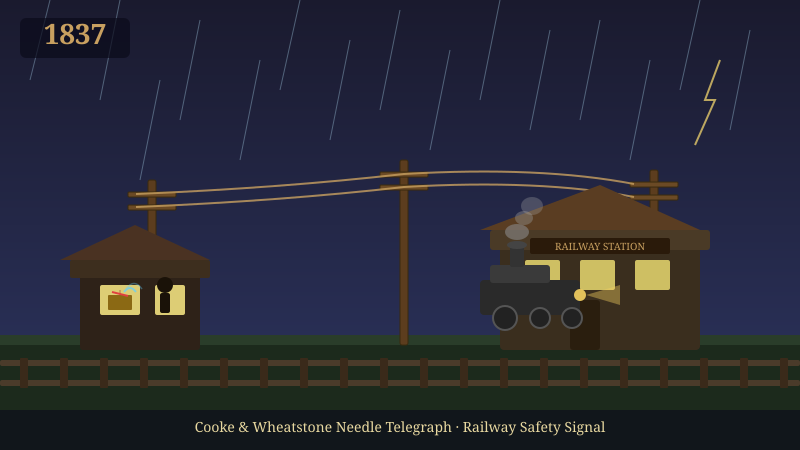

1837
전기로 소식을 보내자, "기차보다 1억 배 빠르게"
"기차는 1시간에 60km 가는데 소식은 말로 30km밖에 못 가요." 충돌 사고를 막으려 영국 철도 옆에 전선을 깔자, 13마일 떨어진 다음 역에 신호가 즉시 도착했어요. 카카오톡의 가장 오래된 조상이에요.

1830년대 영국에서 새 기술이 인기를 끌고 있었어요 — 철도입니다. 사람과 화물을 빠르게 옮길 수 있는 혁명적인 교통수단이었지만, 큰 문제가 있었어요. 두 기차가 같은 선로에서 충돌하는 사고가 자주 일어났습니다. 한 기차가 어디 있는지 다른 역에서 알 방법이 없었거든요. 옛날엔 사람이 말을 타고 다음 역으로 달려가서 알리는 게 유일한 방법이었습니다. 당연히 기차보다 느렸어요. 한 철도 회사 임원은 한숨 쉬며 말했습니다. "기차는 1시간에 60km 가는데, 위치 정보는 말을 타고 1시간에 30km로 전달돼요. 사고가 안 날 수가 없어요."
두 영국 발명가 윌리엄 쿠크와 찰스 휘스톤은 엉뚱한 상상을 합니다. "전기는 1초에 30만 km를 가잖아. 그럼 전선을 철도 옆에 깔고, 전기 신호로 다음 역에 '내가 출발했다'를 알리면 어떨까? 기차보다 1억 배 빠르게 정보가 전달돼."
1837년 그들은 영국 그레이트 웨스턴 철도에 첫 전기 전신을 설치했습니다. 한 역에서 버튼을 누르면 다음 역의 바늘이 움직여 메시지를 전달했어요. 한 역장은 첫 사용 후 환호했습니다. "제가 여기서 신호를 보내자마자 13마일 떨어진 다음 역에서 받았어요! 즉시예요! 이제 기차 충돌이 사라질 거예요!" 전신은 곧 영국 전역의 철도에 보급됐고, 기차 운영의 안전성을 결정적으로 높였습니다.
이게 바로 "전기로 정보를 보낸다"는 발상의 첫 본격적 사례였어요. 인류가 처음으로 메신저나 말 없이 먼 거리로 정보를 즉시 전달할 수 있게 된 거죠. 오늘날 여러분이 카카오톡으로 친구에게 메시지를 보내면 0.1초 만에 도착하는 것 — 그게 1837년 영국 철도에서 시작된 "전기 통신"의 직계 후손입니다. 인류 통신 역사에서 가장 결정적인 전환점이 사실 기차 충돌을 막으려고 만든 한 도구에서 시작됐어요.
이러한 기술적 진보는 단순한 속도 향상을 넘어, 데이터의 신뢰성과 보안성을 크게 높였습니다. 결과적으로 전 세계가 더욱 긴밀하게 연결되는 계기가 되었습니다.